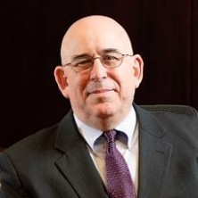

<div id="speakers">
<div class="cell">
<p><b>Dan Mintz</b>, a former Fed 100 award winner, serves as President and Executive Director of the Advanced Mobility Academic Research Center (AMARC).</p>
<p>Dan is also President and Principal Consultant of ESEM Consulting, providing technology insight, strategic management and business capture support to small and mid-sized companies in the Federal marketplace as well as program and technology advice to Federal organizations. In these positions, Dan brings his experience as the US Department of Transportation’s (DOT) departmental CIO from 2006-2009 and business acumen from serving as a CTO and a COO in large and smaller companies in the federal business marketplace.</p>
<p>Dan is a frequent speaker and moderator at conferences and events focusing on mobility, cloud computing, Government 2.0 and 3.0 and cyber-security issues. He writes a blog covering organizational disruption, technology development, and his take on the world at <a href="http://www.ourownlittlecorner.com/">www.ourownlittlecorner.com</a>, is on Facebook and ‘tweets’ using the name <a href=@"https://twitter.com/technogeezer">@technogeezer.</a></p>
<p>For the last several years, Dan Mintz has been teaching IT management education as an adjunct professor at Syracuse University and at the University of Maryland University College (UMUC).</p>
</div>
</div>